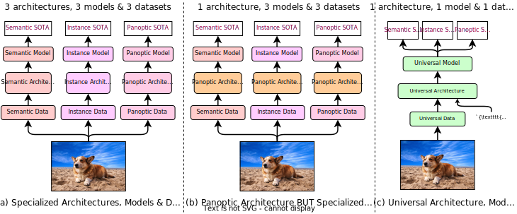

Abstract
Universal Image Segmentation is not a new concept. Past attempts to unify image segmentation in the last decades include scene parsing, panoptic segmentation, and, more recently, new panoptic architectures. However, such panoptic architectures do not truly unify image segmentation because they need to be trained individually on the semantic, instance, or panoptic segmentation to achieve the best performance. Ideally, a truly universal framework should be trained only once and achieve SOTA performance across all three image segmentation tasks. To that end, we propose OneFormer, a universal image segmentation framework that unifies segmentation with a multi-task train-once design. We first propose a task-conditioned joint training strategy that enables training on ground truths of each domain (semantic, instance, and panoptic segmentation) within a single multi-task training process. Secondly, we introduce a task token to condition our model on the task at hand, making our model task-dynamic to support multi-task training and inference. Thirdly, we propose using a query-text contrastive loss during training to establish better inter-task and inter-class distinctions. Notably, our single OneFormer model outperforms specialized Mask2Former models across all three segmentation tasks on ADE20k, CityScapes, and COCO, despite the latter being trained on each of the three tasks individually with three times the resources. With new ConvNeXt and DiNAT backbones, we observe even more performance improvement. We believe OneFormer is a significant step towards making image segmentation more universal and accessible.